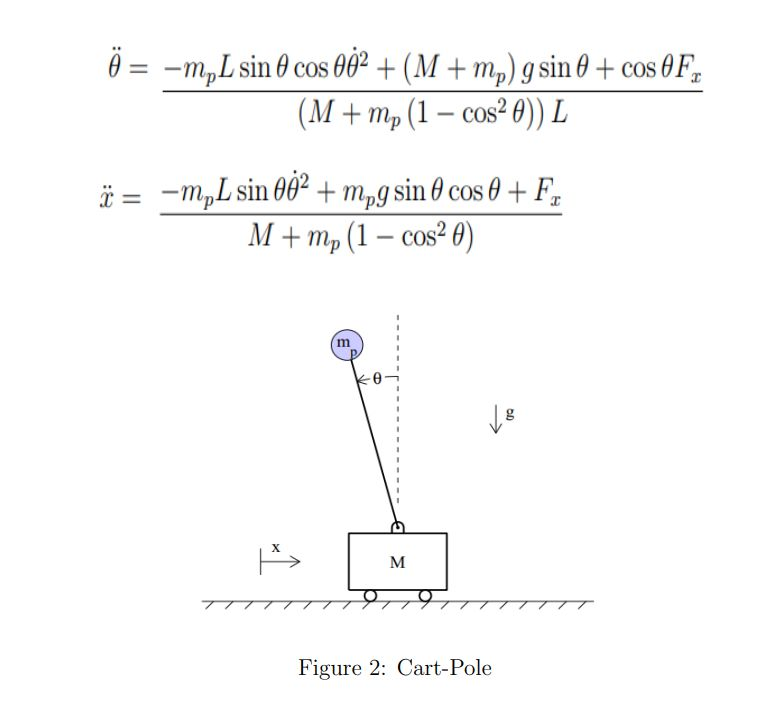

The dynamics of the cart-pole system shown in Figure is given below. Here M and mp is the mass (kg) of the cart and pole respectively. The linear displacement (in m) of the cart is s denoted by x, g is the acceleration due to gravity, θ is the angular displacement (radians) of the pole of length L (in m) and Fx is the input force applied to the cart (in N). Find the optimal control input (Fx) that takes the pole from the initial angular position θ(0) = π/6 to the desired angular position θ(tf) = 0? (Here, the final time tf is a free variable.) M = 20 Kg, mp = 0.5 kg, L = 0.5 m;

Note: Assuming that θ is small we can linearize the non-linear problem to get A and B.
\[ \begin{aligned} & \ddot{\theta}=\frac{-m_p L \sin \theta \cos \theta \dot{\theta}^2+\left(M+m_p\right) g \sin \theta+\cos \theta F_x}{\left(M+m_p\left(1-\cos ^2 \theta\right)\right) L} \\ & \ddot{x}=\frac{-m_p L \sin \theta \dot{\theta}^2+m_p g \sin \theta \cos \theta+F_x}{M+m_p\left(1-\cos ^2 \theta\right)} \end{aligned} \]
\(\begin{aligned} & \Rightarrow \text { let, } \\ & x=\left[\begin{array}{l}x_1 \\ x_2 \\ x_3 \\ x_4\end{array}\right] \\ & x_1=x \\ & x_2=\dot{x} \\ & x_3=\theta \\ & x_4=\dot{\theta} \\ & u=F_x \\ & \end{aligned}\)
\(\begin{aligned} & \Rightarrow M l \ddot{\theta}=(M+m) g \theta-u \\ & \Rightarrow M \ddot{x}=u-m g \theta \\ & \Rightarrow \ddot{\theta}=\frac{(M+m) g \theta}{M l}-\frac{u}{M l} \\ & \Rightarrow \ddot{x}=\frac{u}{M}-\frac{m g}{M} \theta\end{aligned}\)
\(\left[\begin{array}{c}\dot{x}_1 \\ \dot{x}_2 \\ \dot{x}_3 \\ \dot{x}_4\end{array}\right]=\left[\begin{array}{cccc}0 & 1 & 0 & 0 \\ 0 & 0 & \frac{-m g}{M} & 0 \\ 0 & 0 & 0 & 1 \\ 0 & 0 & \frac{(M+m)g}{M l} & 0\end{array}\right]\left[\begin{array}{l}x_1 \\ x_2 \\ x_3 \\ x_4\end{array}\right]+\left[\begin{array}{c}0 \\ \frac{1}{M} \\ 0 \\ \frac{-1}{M l}\end{array}\right] u\)
\(\dot{x}=A x+B U\)
Given, M = 20 kg g = 9.8 m / s2 m = 0.5 kg l = 0.5 m
Controllability matrix, CM = CM = [B AB A2B A3B] By substituting M, g, m, l and calculating the rank of the controllability matrix we get, rank(CM) = 4 Which means the system is controllable
If a system is controllable we can make the system stable
By calculating the eigen values of A, we get some non-negative eigen values which means presently the system is unstable. We can make the system stable since the system is controllable.
Here we solve for P and get K.
Now following, U = -KX Xdot = AX + BU
starting from the initial state X0 = [0 0 π/6 0] we get the following results.
| itr | x | xdot | theta | thetadot | u |
|---|---|---|---|---|---|
| 0 | 0.000000 | 0.000000 | 0.523599 | 0.000000 | 0.000000 |
| 1 | 0.000000 | 0.059975 | 0.523599 | -0.017324 | 122.515388 |
| 2 | -0.000600 | 0.119574 | 0.523426 | -0.033898 | 121.764630 |
| 3 | -0.001795 | 0.178798 | 0.523087 | -0.049753 | 121.011577 |
| … | … | … | … | … | … |
| 1995 | -10.630456 | 0.018014 | 0.000081 | -0.001051 | 0.012374 |
| 1996 | -10.630637 | 0.018019 | 0.000070 | -0.001045 | 0.010227 |
| 1997 | -10.630817 | 0.018022 | 0.000060 | -0.001039 | 0.008092 |
| 1998 | -10.630997 | 0.018025 | 0.000049 | -0.001033 | 0.005970 |
| 1999 | -10.631177 | 0.018027 | 0.000039 | -0.001027 | 0.003861 |
The main idea behind Q-learning is that if we had a function Q* :State×Action→R, that could tell us what our return would be, if we were to take an action in a given state, then we could easily construct a policy that maximizes our rewards: \[ \begin{aligned} \pi^{*}(s) = argmax_{a} Q^{*}(s,a) \end{aligned} \]
However, we don’t know everything about the world, so we don’t have access to Q. But, since neural networks are universal function approximators, we can simply create one and train it to resemble Q.
For our training update rule, we’ll use a fact that every Q function for some policy obeys the Bellman equation:
\[ \begin{aligned} Q^{\pi}(s, a) = r + \gamma Q^{\pi}(s', \pi(s')) \end{aligned} \]
The difference between the two sides of the equality is known as the temporal difference error, δ:
\[ \begin{aligned} δ = Q(s, a) - (r + \gamma* max_{a}'Q(s', a) \end{aligned}) \]
To minimize this error, we will use the Huber loss. The Huber loss acts like the mean squared error when the error is small, but like the mean absolute error when the error is large - this makes it more robust to outliers when the estimates of Q are very noisy.